Смажимо за стіною, варимо при вас
«Пара» — невелика кав’ярня з власним ростером на Січеславській набережній. Щочетверга смажимо свіжу партію, у п’ятницю вона вже в кавомолці. Ви п’єте каву, якій від сили тиждень, і дивитесь, як над Дніпром розходиться туман.
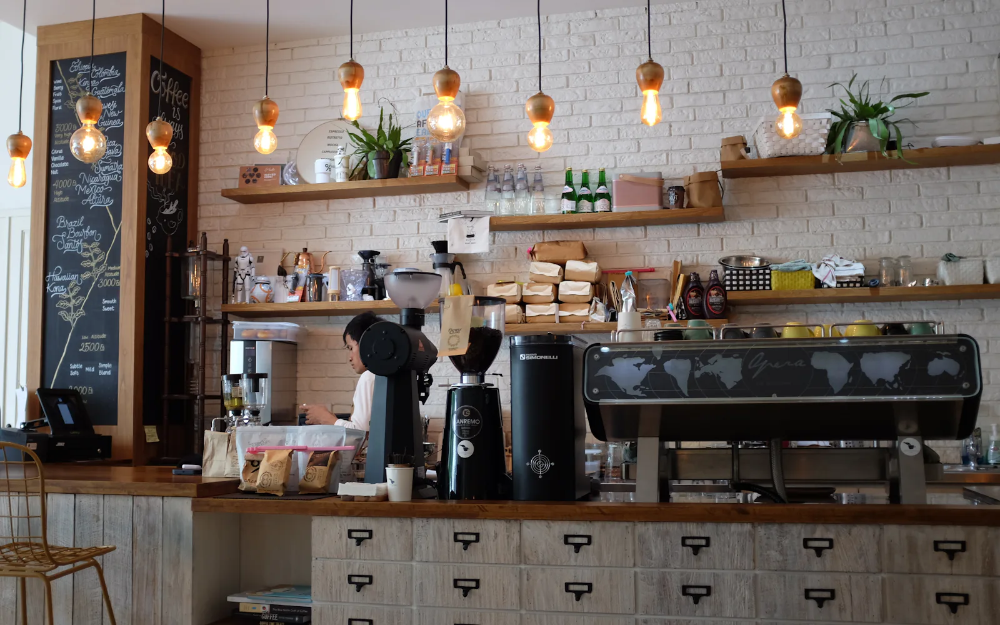
Ми відкрилися у 2019-му з однією кавомашиною і ростером на кілограм. Тепер ростер більший, а принцип той самий: купуємо зерно невеликими лотами, смажимо самі й не тримаємо його на полиці довше трьох тижнів.
За стійкою — четверо бариста. Розкажуть, чим мита Ефіопія відрізняється від натуральної, але тільки якщо спитаєте.
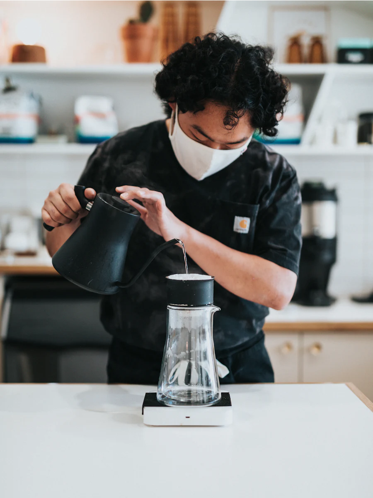
- 7
- років на набережній
- 12
- сортів зерна на полиці
- 340
- чашок за звичайний день
- 60 кг
- смажимо щотижня
Від ягоди до чашки
-
Ягода
Кава — це кісточка червоної ягоди. Купуємо зелене зерно невеликими лотами з Ефіопії, Колумбії та Руанди. Кожен мішок — із конкретної ферми, її назва є на пакеті.
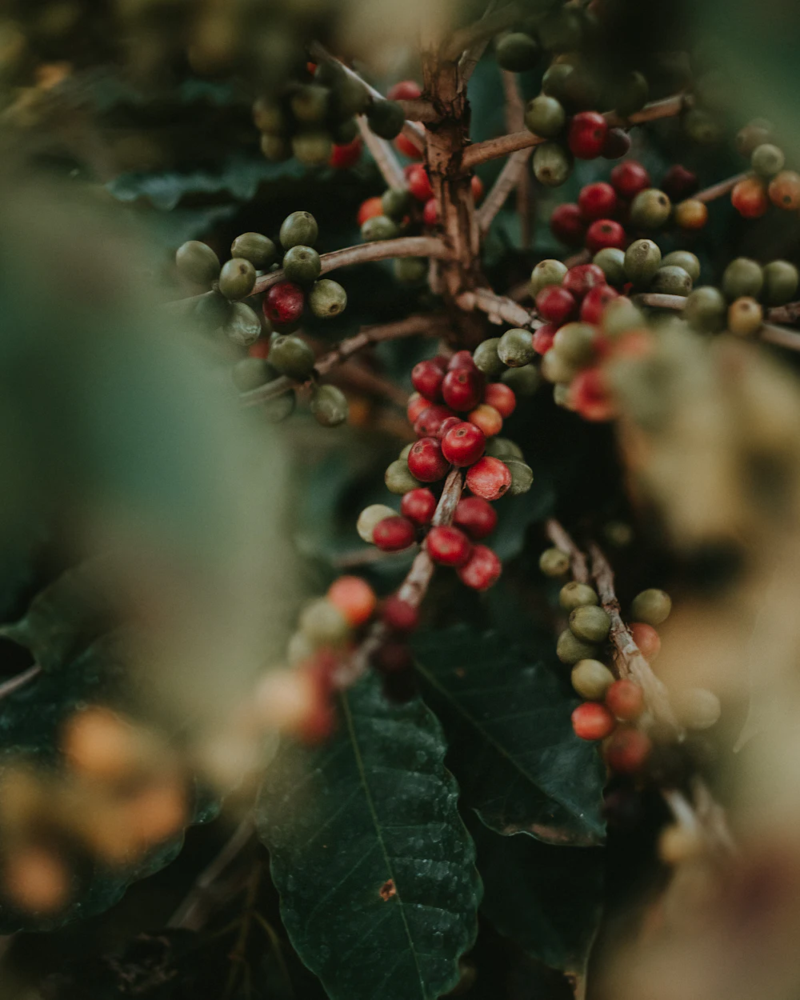
-
Обсмаження
Щочетверга о сьомій ранку вмикаємо ростер. Світле обсмаження для фільтра, середнє для еспресо. Темного не робимо — воно ховає смак зерна.
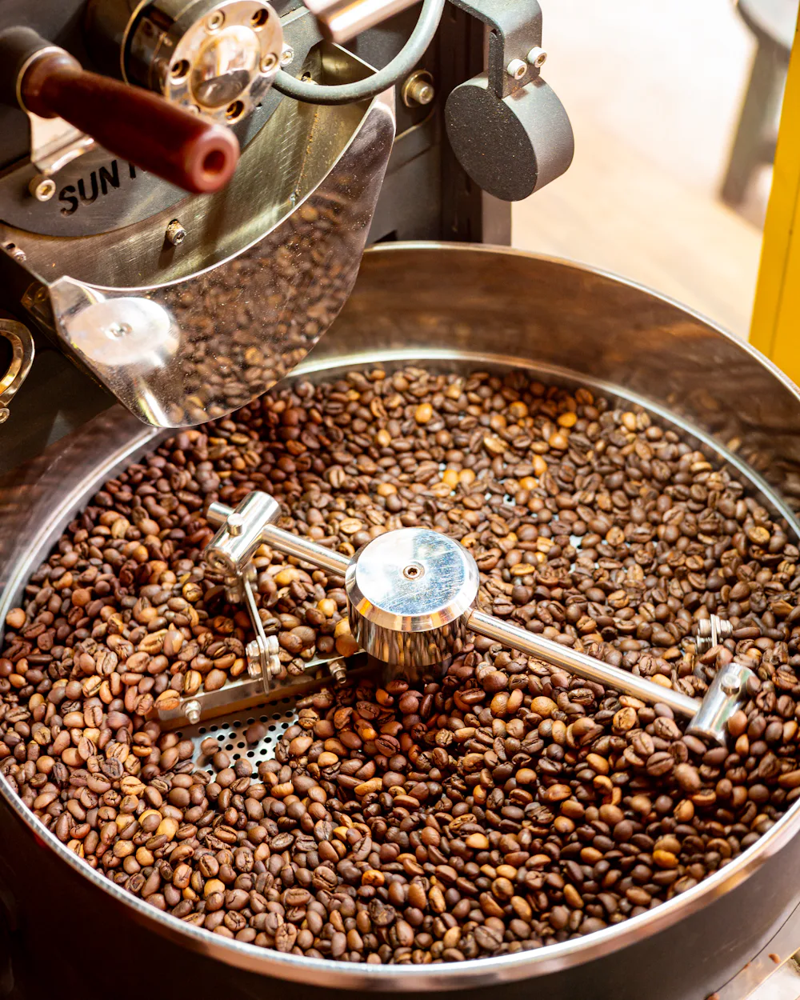
-
Екстракція
Помел налаштовуємо щоранку: 18 грамів кави, 36 грамів еспресо, 27 секунд. Якщо шот не влучив — виливаємо й робимо новий.
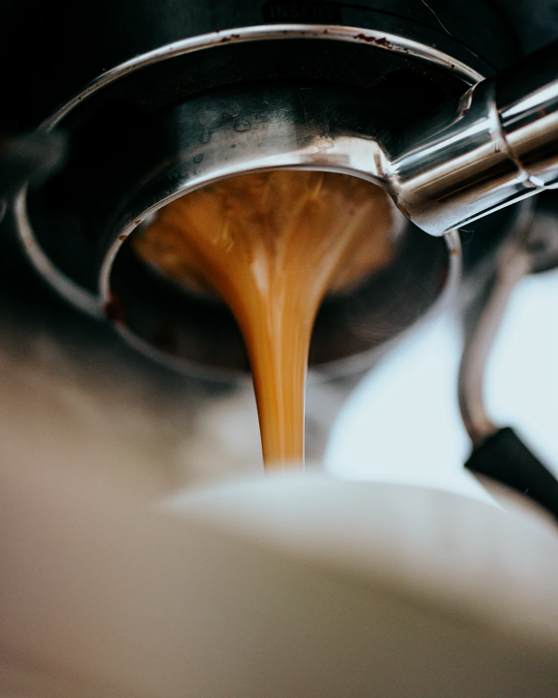
-
Чашка
Подаємо в теплій кераміці, яку ліплять у дніпровській майстерні. Перший ковток — поки над чашкою ще стоїть пара.
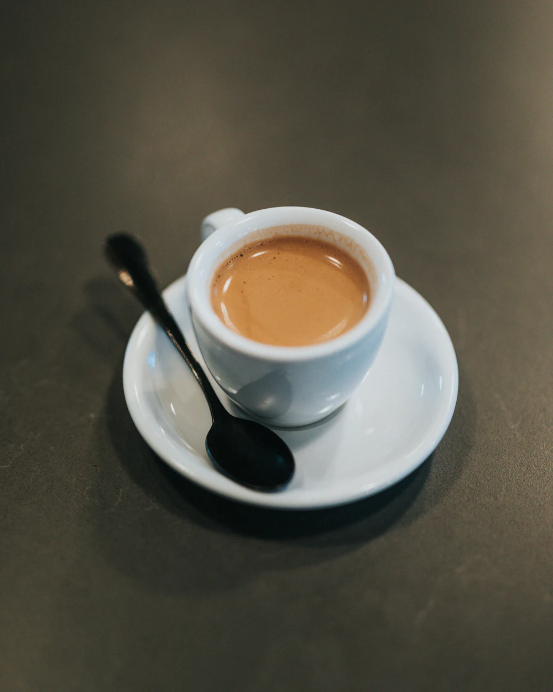
Як у нас
Ростер гуде в кутку, біля вікна — шість столиків із видом на річку.
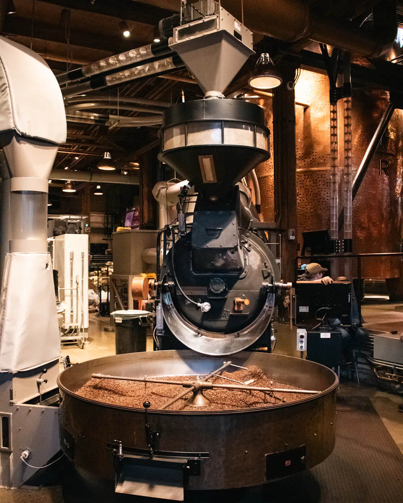
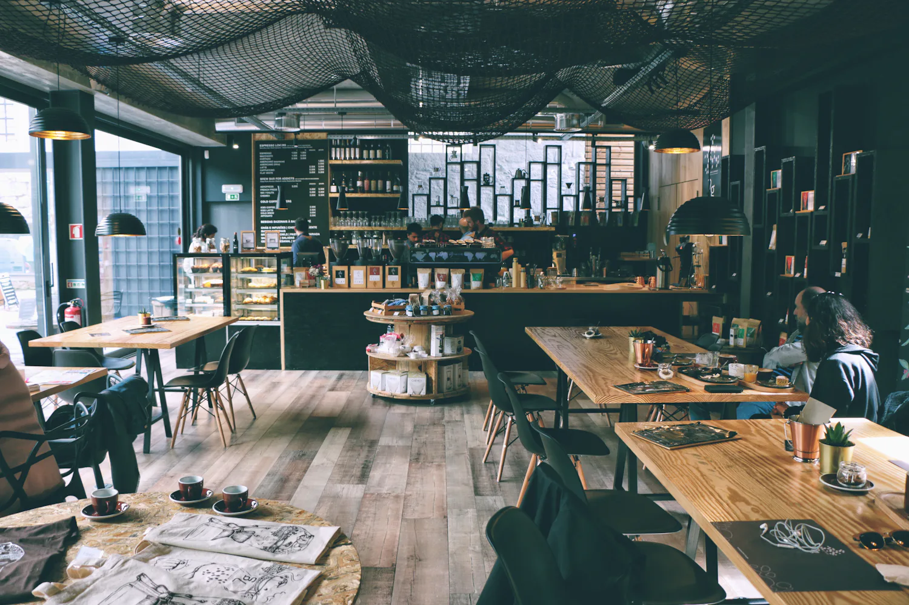
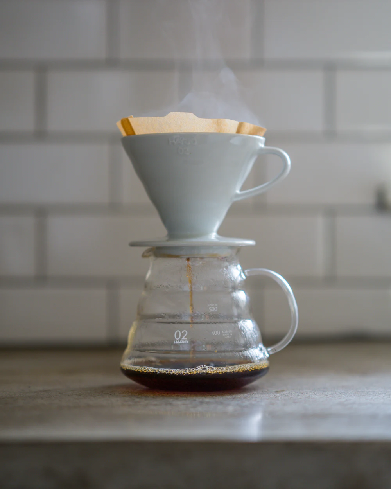
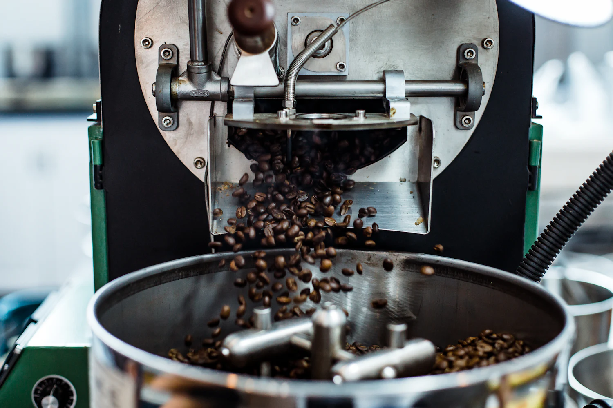
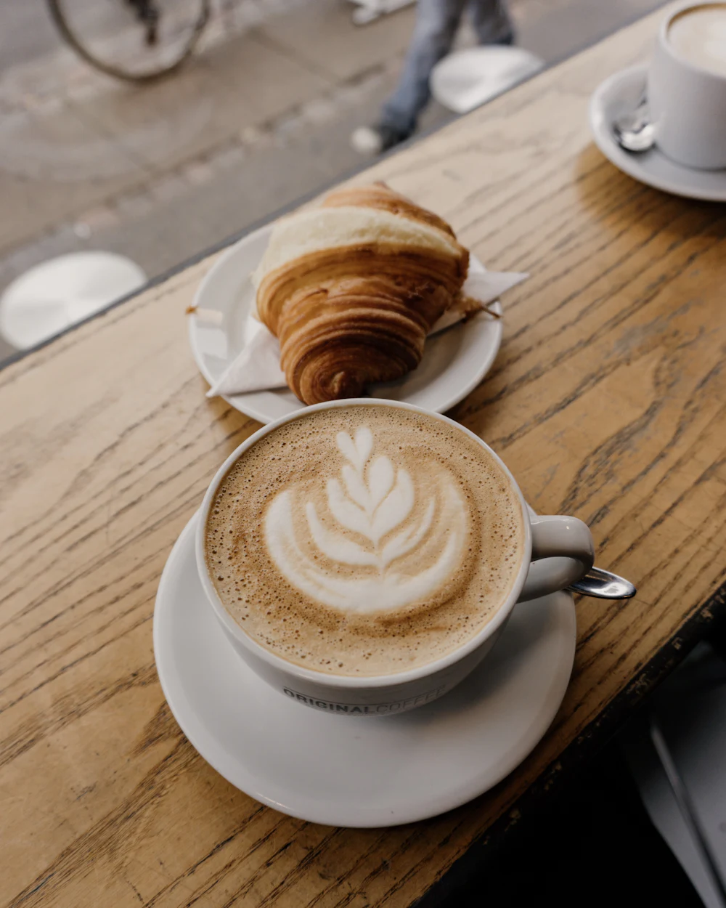
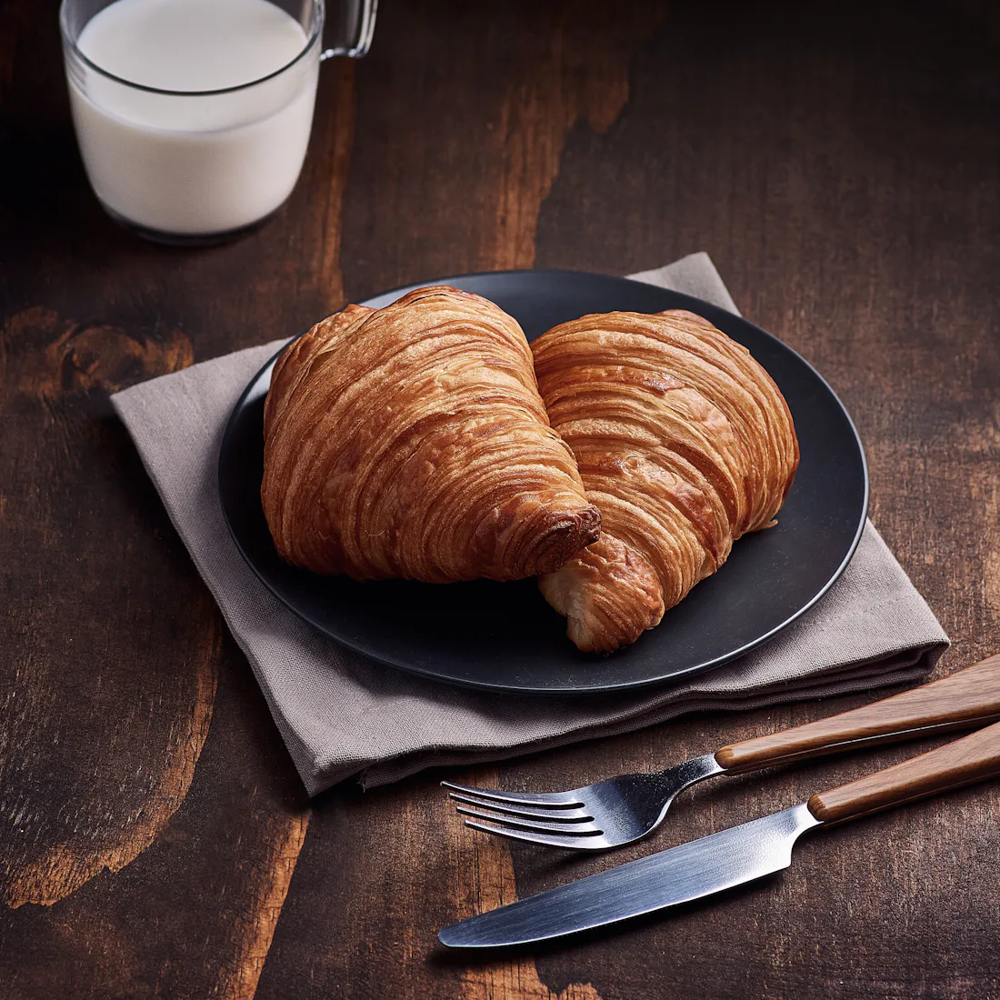
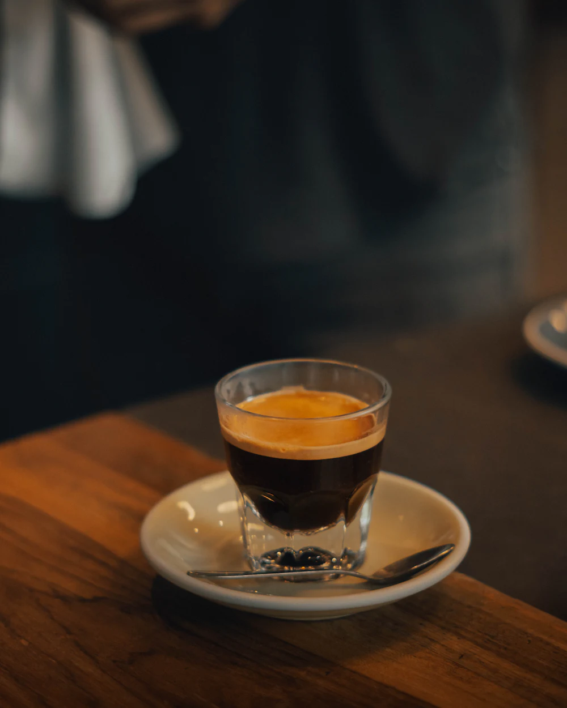
Столик біля вікна краще притримати заздалегідь
Забронювати в TelegramКажуть гості
Заходжу перед роботою вже третій рік. Бариста пам’ятає, що мені флет на вівсяному, і встигає зробити, поки я паркую велосипед.
Єдине місце в Дніпрі, де мені пояснили різницю між митою та натуральною обробкою і не зробили з цього лекцію. Беру зерно додому щомісяця.
Сирник запечений — небезпечна штука. Прийшла на каву, залишилась на дві години з ноутбуком і другим сирником.
V60 з Ефіопії справді пахне чорницею. Думав, що це маркетинг, поки не спробував. Тепер воджу сюди всіх гостей міста.
Заходьте
-
Січеславська набережна, 29
Дніпро, вхід із боку річки -
пн–пт 7:30–21:00
сб–нд 9:00–22:00 -
067 000 00 00
відповідаємо в робочі години
Притримаємо столик або відкладемо пакет зерна — відповідаємо за кілька хвилин.